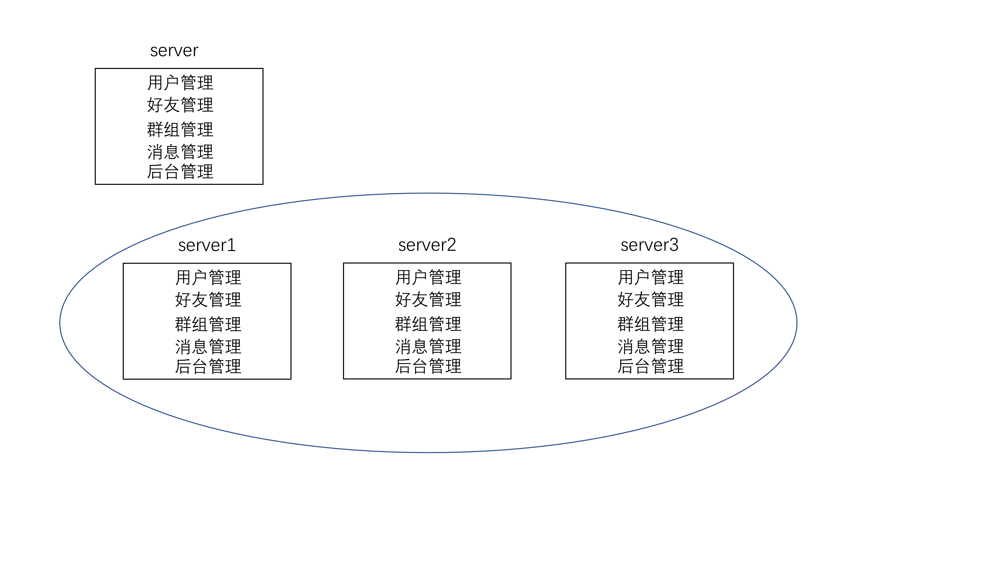
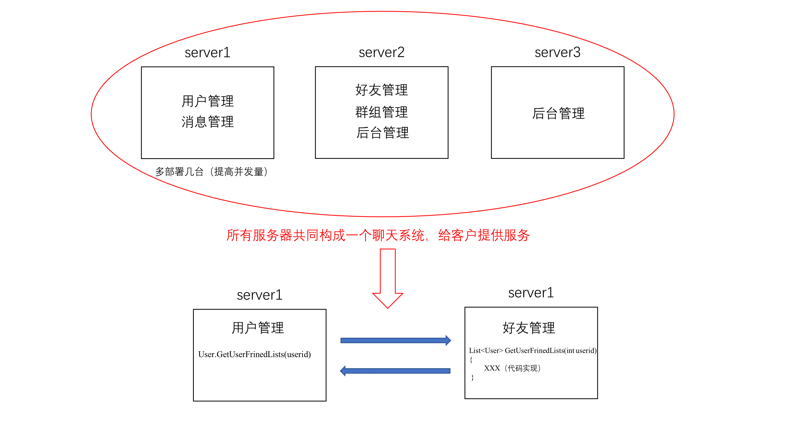
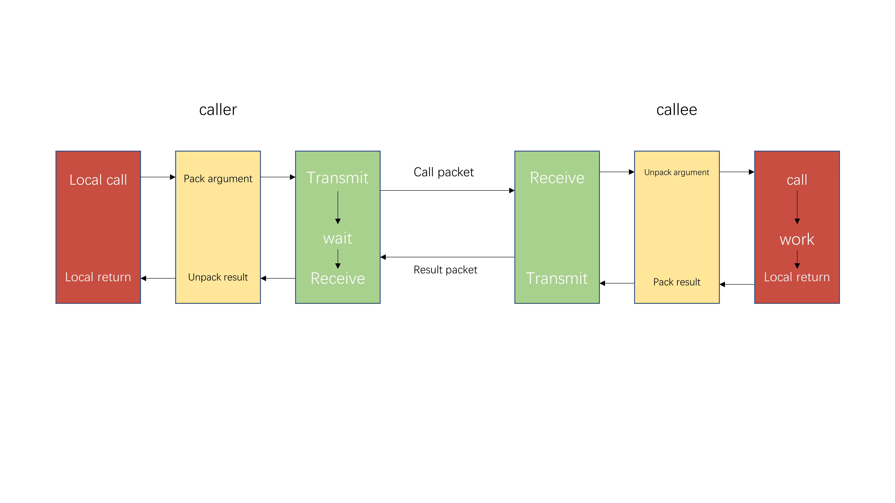
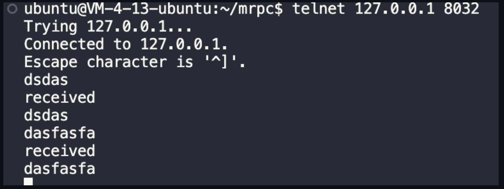

开始补上MPRPC项目的代码实现，从头开始———-day1 简介：项目基于muduo高性能网络库 + protobuf开发，所以命名为mprpc。
技术栈
集群和分布式概念及原理
RPC远程过程调用原理及实现
Protobuf数据序列化和反序列化协议
Zookeeper分布式一致性协调服务应用及编程（服务注册中心，方便寻找哪个服务在哪台服务器上）
muduo网络库编程
conf配置文件读取
CMake构建项目集成编译环境
集群和分布式（搞懂为什么要分布式） 集群 ：每一台服务器独立运行一个工程的所有模块
分布式 ：一个工程拆分了很多模块，每一个模块独立部署运行在一个服务器主机上，所有服务器协同工作共同提供服务，每一台服务器称作分布式的一个节点，根据节点的并发要求，对一个节点可以再做节点模块集群部署。

如图中server所示，一个聊天系统包括不同模块：用户管理、好友管理、群组管理、消息管理以及后台管理五个模块。每个模块有自己的特定业务，举个例子，用户管理模块包括用户注册、用户登录、用户注销等。
现在让你提出一些单机聊天服务器的缺陷，你能想到哪些？
受限于硬件资源，聊天服务器所能承受的用户的并发量，比如端口用光了。
假设这个单机聊天服务器体系很庞大，项目编译需要两个小时！如果现在消息管理模块有一个小bug，需要改动几行，然后导致需要重新编译、部署整个项代码。
系统中，有些模块是属于CPU密集型，有些模块是I/O密集型的，造成各模块对于硬件资源的需求是不一样的。既然受限于硬件资源，我们就多部署几台服务器，横向增加服务器数量。但并未解决问题2和3。
集群的优缺点如下，优点：用户的并发量提升了。缺点：项目代码还是需要整体重新编译，而且需要进行多次部署。

现在我们看红色圈，我们把不同模块分类部署在不同服务器上。所有服务器共同构成一个聊天系统，这就是分布式。现在我们将不同服务器分别视为不同分布式节点。比如用户管理模块和消息管理模块对并发要求高，我们可以进行扩容，再部署几台服务器用于用户管理和消息管理（根据节点的并发要求，对一个节点可以再做节点模块集群部署）。分布式系统针对问题2，每个模块独立部署独立运行，哪个模块有bug，我只需要重新编译部署那个模块，其他模块还能正常运行。问题3就很明显了，视不同要求配置不同服务器。
那分布式就全是优点吗？下面我们说说关于分布式设计的难点。
大系统的软件模块该怎么划分。
各模块之间怎么访问？集群服务器所有模块运行在一个进程里，不同模块之间访问简便。而分布式各模块都运行在不同的进程里，那服务器1的模块怎么调用服务器2上的模块的一个业务方法呢？我们这个项目所做的就是封装这种远程调用过程，方便用户调用，也就是程序员方便使用我们写的项目（MPRPC）。
RPC通信原理———-day2
通过上图我们可以看到，我们设计的框架主要由以下部分和流程组成：
发起调用端（caller）：调用方需要将调用的函数名、参数打包（序列化），并通过网络发送出去。这里打算采用muduo网络库。
接收端（callee）：接收方接收到包后，将包里的内容反序列化，就能知道调用哪一个函数、传入的参数是啥，然后返回值依旧是序列化之后通过网络发送回去，发送端接收到后反序列化，得到具体的返回值。
我们的框架主要是实现图中的黄绿部分。
黄色部分是rpc方法参数的打包和解析，也就是数据的序列化与反序列化，通过protobuf完成。
在图中，有一些东西没画进去，比如我们将黄色块分别取名为client-stub和server-stub。这两个stub都是执行数据的序列化与反序列化。
如果远程调用过程中函数执行出错，我们可以返回一些错误码，防止接收端读取错误的返回值。
绿色部分：网络部分，包括寻找rpc服务主机，发起rpc调用请求和响应rpc调用结果，使用muduo网络库和Zookeeper服务配置中心（专门做服务发现）。
protobuf相对于json的好处：
1、protobuf是二进制存储；xml和json都是文本存储
2、protobuf不需要存储额外的信息；json通过key-value存储数据
项目环境搭建 文件组成
bin：可执行文件
build：项目编译文件
lib：项目库文件
src：源文件
test：测试代码
example：框架代码使用范例
CMakeLists.txt：顶层的
cmake文件
README.md：项目自述文件
autonbuild.sh：一键编译脚本
Ubuntu protobuf环境搭建 首先在GitHub下载源代码，源码包中src/README.md有详细的安装说明，也可以按照如下步骤安装：
解压压缩包：unzip protobuf-master.zip
进入解压后的文件夹：cd protobuf-master
安装所需工具：sudo apt-get install autoconf automake libtool curl make g++ unzip
自动生成configure配置文件：./autogen.sh
配置环境：./configure
编译源代码（时间比较长）：make
安装：sudo make install
刷新动态库：sudo ldconfig
测试：看能否正常执行protoc命令（直接去终端执行）
源码下载地址：https://github.com/protocolbuffers/protobuf
muduo库安装 关于muduo库安装，强烈推荐按照施老师的步骤来（参考链接：https://blog.csdn.net/QIANGWEIYUAN/article/details/89023980），可以不用看我下面的安装步骤，不完整！！！
安装依赖：sudo apt-get install libbost-dev libbost-test-dev sudo apt-get install libcurl4-openssl-dev libc-ares-dev
拉文件：git clone https://github.com/chenshuo/muduo.git
./build.sh
muduo库是否安装成功的测试：muduo_test.cpp实现了一个简单的echo server
编译：
1 g++ -std=c++11 muduo_test.cpp -lmuduo_net -lmuduo_base -lpthread -o muduo_test
执行：
一个shell终端执行
另一个shell终端执行
如下图所示则安装成功

创建文件（循序渐进，现在需要哪些文件夹就创建哪些） 首先，我们可以以自己的名字缩写作为后缀创建一个mprpc文件夹，比如我创建的
接下来我们需要在mprpc_zcl文件夹里创建以下这些文件
1 2 3 4 5 6 7 8 9 cd mprpc_zcl mkdir bin mkdir build mkdir example mkdir lib mkdir src mkdir test touch autobuild.sh touch CMakeLists.txt
好啦，第一件该做的事我们已经完成啦！
protobuf实践讲解（一） 首先我们写一个protobuf测试文件来了解一下protobuf的基本使用。
1 2 3 4 5 # 在test 文件夹下创建protobuf文件夹，在protobuf文件夹里创建test.proto文件和main.cpp文件 cd test/ mkdir protobuf cd protobuf/ touch main.cpp test.proto
首先编写test.proto文件，必要的注释我会放在代码块里。
1 2 3 4 5 6 7 8 9 10 11 12 13 14 15 16 17 18 19 20 21 22 23 24 25 26 27 28 syntax = "proto3" ; package fixbug; message LoginRequest { string name = 1 ; string pwd = 2 ; } message LoginResponse { int32 errcode = 1 ; string errmsg = 2 ; bool success = 3 ; }
接下来，编写main.cpp进行测试
1 2 3 4 5 6 7 8 9 10 11 12 13 14 15 16 17 18 19 20 21 22 23 24 25 26 27 28 29 30 31 #include "test.pb.h" #include <iostream> #include <string> int main () fixbug::LoginRequest req; req.set_name ("zhangsan" ); req.set_pwd ("123456" ); std::string send_str; if (req.SerializeToString (&send_str)){ std::cout << send_str.c_str () << std::endl; } fixbug::LoginRequest reqB; if (reqB.ParseFromString (send_str)){ std::cout << reqB.name () << std::endl; std::cout << reqB.pwd () << std::endl; } return 0 ; }
protobuf实践讲解（二） 这一小节我们主要引入了两个新知识：
必要的注释我已经放在代码块里了，大家可以看看，有不对的地方请谅解并麻烦指出来。
首先是test.proto文件的更新版
1 2 3 4 5 6 7 8 9 10 11 12 13 14 15 16 17 18 19 20 21 22 23 24 25 26 27 28 29 30 31 32 33 34 35 36 37 38 39 40 41 42 43 44 45 46 47 48 49 50 51 52 53 54 55 56 57 58 59 60 61 62 63 syntax = "proto3" ; package fixbug; message ResultCode { int32 errcode = 1 ; bytes errmsg = 2 ; } message LoginRequest { bytes name = 1 ; bytes pwd = 2 ; } message LoginResponse { ResultCode result = 1 ; bool success = 2 ; } message GetFriendListsRequest { uint32 userid = 1 ; } message User { bytes name = 1 ; uint32 age = 2 ; enum Sex { MAN = 0 ; WOMAN = 1 ; } Sex sex = 3 ; } message GetFriendListsReponse { ResultCode result = 1 ; repeated User friend_list = 2 ; }
main.cpp更新版
1 2 3 4 5 6 7 8 9 10 11 12 13 14 15 16 17 18 19 20 21 22 23 24 25 26 27 28 29 30 31 32 33 34 35 36 37 38 39 40 41 42 43 44 45 46 47 48 49 50 51 52 53 54 55 56 57 58 59 60 61 62 63 64 65 66 67 68 #include "test.pb.h" #include <iostream> #include <string> int main () fixbug::LoginRequest req; req.set_name ("zhangsan" ); req.set_pwd ("123456" ); std::string send_str; if (req.SerializeToString (&send_str)){ std::cout << send_str.c_str () << std::endl; } fixbug::LoginRequest reqB; if (reqB.ParseFromString (send_str)){ std::cout << reqB.name () << std::endl; std::cout << reqB.pwd () << std::endl; } fixbug::LoginResponse rsp; fixbug::ResultCode *rc = rsp.mutable_result (); rc->set_errcode (1 ); rc->set_errmsg ("登陆处理失败了" ); std::string recv_str; if (rsp.SerializeToString (&recv_str)){ std::cout << recv_str.c_str () << std::endl; } fixbug::GetFriendListsReponse rsp2; fixbug::ResultCode *rc2 = rsp2.mutable_result (); rc2->set_errcode (0 ); fixbug::User *user1 = rsp2.add_friend_list (); user1->set_name ("zhang san" ); user1->set_age (20 ); user1->set_sex (fixbug::User::MAN); fixbug::User *user2 = rsp2.add_friend_list (); user2->set_name ("li si" ); user2->set_age (18 ); user2->set_sex (fixbug::User::MAN); std::string recv_str2; if (rsp2.SerializeToString (&recv_str2)){ std::cout << "2" << recv_str2.c_str () << std::endl; } std::string user_str; if (user1->SerializeToString (&user_str)){ std::cout << "1" << user_str.c_str () << std::endl; } std::cout << rsp2.friend_list_size () << std::endl; return 0 ; }
protobuf实践讲解（三） 这一节我们主要讲了如何引入函数名。因为我们只传输参数给远程rpc服务器是肯定不够的，远程rpc服务器还需要知道我们需要调用哪种方法，因此我们需要使用service在远程rpc服务器上注册函数？（不知道这个理解对不对）同时，方便之后函数调用方传输函数名，里面有一个ServiceDescriptor类型的指针，用于访问方法的各个属性。代码更新如下，主要更新了test.proto文件，main文件没有更新。
1 2 3 4 5 6 7 8 9 10 11 12 13 14 15 16 17 18 19 20 21 22 23 24 25 26 27 28 29 30 31 32 33 34 35 36 37 38 39 40 41 42 43 44 45 46 47 48 49 50 51 52 53 54 55 56 57 58 59 60 61 62 63 64 65 66 67 68 69 70 71 72 73 74 75 76 syntax = "proto3" ; package fixbug; option cc_generic_services = true ;message ResultCode { int32 errcode = 1 ; bytes errmsg = 2 ; } message LoginRequest { bytes name = 1 ; bytes pwd = 2 ; } message LoginResponse { ResultCode result = 1 ; bool success = 2 ; } message GetFriendListsRequest { uint32 userid = 1 ; } message User { bytes name = 1 ; uint32 age = 2 ; enum Sex { MAN = 0 ; WOMAN = 1 ; } Sex sex = 3 ; } message GetFriendListsReponse { ResultCode result = 1 ; repeated User friend_list = 2 ; } service UserServiceRpc { rpc Login(LoginRequest) returns (LoginResponse) rpc GetFriendLists(GetFriendListsRequest) returns (GetFriendListsReponse) }
本地服务如何发布成RPC服务（一） 这一块算是正式跨入项目第一步，我们通过业务出发，如果要实现我们所需要的具体需求应该怎么办，直接给出更新后的代码，必要的注释都在代码里
这里先给大家看一个本节之后的文件组成情况
1 2 3 4 5 6 7 8 9 10 11 12 13 14 15 16 17 18 19 20 21 22 23 24 25 26 . ├── CMakeLists.txt ├── autobuild.sh ├── bin ├── build ├── example │ ├── CMakeLists.txt │ ├── callee │ │ ├── CMakeLists.txt │ │ └── userservice.cpp │ ├── caller │ ├── user.pb.cc │ ├── user.pb.h │ └── user.proto ├── lib ├── src └── test └── protobuf ├── a.out ├── main.cpp ├── test.pb.cc ├── test.pb.h └── test.proto 9 directories, 13 files # 最上面的小点代表根目录：mprpc_zcl
更新后的mprpc_zcl/CMakeLists.txt
1 2 3 4 5 6 7 8 9 10 11 12 13 14 15 16 17 18 19 20 21 22 cmake_minimum_required (VERSION 3.0 )project (mprpc_zcl)set (EXECUTABLE_OUTPUT_PATH ${PROJECT_SOURCE_DIR} /bin)set (LIBRARY_OUTPUT_PATH ${PROJECT_SOURCE_DIR} /lib)include_directories (${PROJECT_SOURCE_DIR} /src)include_directories (${PROJECT_SOURCE_DIR} /example)link_directories (${PROJECT_SOURCE_DIR} /lib)add_subdirectory (example)
更新后的mprpc_zcl/example/user.proto
1 2 3 4 5 6 7 8 9 10 11 12 13 14 15 16 17 18 19 20 21 22 23 24 25 26 syntax = "proto3" ; package fixbug;option cc_generic_services = true ;message ResultCode { int32 errcode = 1 ; bytes errmsg = 2 ; } message LoginRequest { bytes name = 1 ; bytes pwd = 2 ; } message LoginResponse { ResultCode result = 1 ; bool success = 2 ; } service UserServiceRpc { rpc Login_rpc(LoginRequest) returns (LoginResponse) }
更新后的mprpc_zcl/example/CMakeLists.txt
1 add_subdirectory (callee)
更新后的mprpc_zcl/example/callee/userservice.cpp
1 2 3 4 5 6 7 8 9 10 11 12 13 14 15 16 17 18 19 20 21 22 23 24 25 26 27 28 29 30 31 32 33 34 35 36 37 38 39 40 #include <iostream> #include <string> #include "../user.pb.h" class Userservice : public fixbug::UserServiceRpc { public : bool Login_local (std::string name, std::string pwd) std::cout << "doing local service: Login" << std::endl; std::cout << "name:" << name << " pwd:" << pwd; return true ; } void Login_rpc (::google::protobuf::RpcController* controller, const ::fixbug::LoginRequest* request, ::fixbug::LoginResponse* response, ::google::protobuf::Closure* done) { } }; int main () return 0 ; }
更新后的mprpc_zcl/example/callee/CMakeLists.txt
1 2 set (SRC_LIST userservice.cpp ../user.pb.cc)add_executable (provider ${SRC_LIST} )
本地服务如何发布成RPC服务（二） 这一节必要的注释我都放在了代码里，以及思考的过程，这一节只对userservice.cpp进行了更新
1 2 3 4 5 6 7 8 9 10 11 12 13 14 15 16 17 18 19 20 21 22 23 24 25 26 27 28 29 30 31 32 33 34 35 36 37 38 39 40 41 42 43 44 45 46 47 48 49 50 51 52 53 54 55 56 57 58 59 60 61 62 63 #include <iostream> #include <string> #include "../user.pb.h" class Userservice : public fixbug::UserServiceRpc { public : bool Login_local (std::string name, std::string pwd) std::cout << "doing local service: Login" << std::endl; std::cout << "name:" << name << " pwd:" << pwd; return true ; } void Login_rpc (::google::protobuf::RpcController* controller, const ::fixbug::LoginRequest* request, ::fixbug::LoginResponse* response, ::google::protobuf::Closure* done) { std::string name = request->name (); std::string pwd = request->pwd (); bool login_result = Login_local (name, pwd); fixbug::ResultCode *code = response->mutable_result (); code->set_errcode (0 ); code->set_errmsg ("" ); response->set_success (login_result); done->Run (); } }; int main () return 0 ; }
Mprpc框架基础类设计 这一节我们从服务发布方的需求出发，比如我需要发布一个rpc服务，我需要做什么？我们考虑思路是这样的：假设现在框架写好了，当远端将请求发送过来，先会被我们的rpc框架接受，我们rpc框架根据接收到的参数，函数名等数据。匹配到了我们重写的这个函数，然后调用了这个函数。所以这一块不属于框架的代码，是我们要使用这个框架必须自己写的代码，实现自己需要的功能。现在的问题是，我callee端收到了参数和函数名，怎么匹配的呢？
我们现在做好了服务发布方的基础工作，我们现在需要思考一个问题：我怎么能让别人想用我们写的rpc框架呢？答案只有一个，就是越简单越好。
先进行框架初始化操作
框架里提供了用于发布服务的类
这一节更新的文件如下
新加入src/include/mprpcapplication.h
1 2 3 4 5 6 7 8 9 10 11 12 13 #pragma once class MprpcApplication {public : static void Init (int argc, char **argv) static MprpcApplication &GetInstance () private : MprpcApplication (){} MprpcApplication (const MprpcApplication&) = delete ; MprpcApplication (MprpcApplication&&) = delete ; };
新加入src/include/mprpcprovider.h
1 2 3 4 5 6 7 8 9 10 11 12 13 #pragma once #include "google/protobuf/service.h" class RpcProvider {public : void NotifyService (google::protobuf::Service *service) void Run () };
新加入src/mprpcapplication.cpp
1 2 3 4 5 6 7 8 9 10 #include "include/mprpcapplication.h" void MprpcApplication::Init (int argc, char **argv) } MprpcApplication &MprpcApplication::GetInstance () { static MprpcApplication app; return app; }
新加入src/mprpcprovider.cpp
1 2 3 4 5 6 7 8 9 10 #include "include/mprpcprovider.h" void RpcProvider::NotifyService (google::protobuf::Service *service) } void RpcProvider::Run () }
更新了example/callee/userservice.cpp
1 2 3 4 5 6 7 8 9 10 11 12 13 14 15 16 17 18 19 20 21 22 23 24 25 26 27 28 29 30 31 32 33 34 35 36 37 38 39 40 41 42 43 44 45 46 47 48 49 50 51 52 53 54 55 56 57 58 59 60 61 62 63 64 65 66 67 68 69 70 71 72 73 74 75 76 77 78 79 80 81 #include <iostream> #include <string> #include "../user.pb.h" #include "/home/zcl/mprpc_zcl/src/include/mprpcapplication.h" #include "/home/zcl/mprpc_zcl/src/include/mprpcprovider.h" class UserService : public fixbug::UserServiceRpc { public : bool Login_local (std::string name, std::string pwd) std::cout << "doing local service: Login" << std::endl; std::cout << "name:" << name << " pwd:" << pwd; return true ; } void Login_rpc (::google::protobuf::RpcController* controller, const ::fixbug::LoginRequest* request, ::fixbug::LoginResponse* response, ::google::protobuf::Closure* done) { std::string name = request->name (); std::string pwd = request->pwd (); bool login_result = Login_local (name, pwd); fixbug::ResultCode *code = response->mutable_result (); code->set_errcode (0 ); code->set_errmsg ("" ); response->set_success (login_result); done->Run (); } }; int main (int argc, char **argv) MprpcApplication::Init (argc, argv); RpcProvider provider; provider.NotifyService (new UserService ()); provider.Run (); return 0 ; }
Mprpc框架项目动态库编译 在init的时候，我们希望用户的输入是这样的：./provider -i config.conf（config.conf是配置文件，自动读取网络服务器和配置中心的ip地址和端口号）。
这节涉及到一个函数：int getopt(int argc, char * const argv[], const char *optstring); 我先给出这个函数的详细解释，方便解读下面的代码
首先，让我们看看getopt函数：
getopt函数用于解析命令行参数。其原型如下：
1 int getopt (int argc, char * const argv[], const char *optstring) ;
argc和argv是从main函数传递过来的命令行参数数量和参数值。optstring是一个字符串，表示我们期望的选项。例如，如果我们期望一个-i选项，那么optstring就会是"i:"。冒号表示-i后面必须跟一个参数值。
函数每次调用都会返回一个字符，这个字符表示被解析到的选项。如果选项后面跟有参数值（如-i value），那么这个值可以通过optarg全局变量获得。当所有选项都被解析完毕后，getopt返回-1。
现在，让我们回到你的代码片段：
1 2 3 4 int c;while ((c = getopt(argc, argv, "i:" )) != -1 ) { }
这个while循环的目的是持续解析命令行参数，直到所有选项都被解析完毕。
c = getopt(argc, argv, "i:")：这里，getopt被调用，并返回值赋给c。如果有-i选项，c会等于字符'i'。
c != -1：这个条件检查c是否不等于-1。如果c等于-1，那么说明所有选项都已经被解析完毕，while循环结束。
在while循环的内部，你可能会基于c的值做一些操作，例如：
1 2 3 4 5 6 7 8 9 switch (c) { case 'i' : break ; case '?' : break ; }
简而言之，这个代码片段用getopt函数在命令行参数中寻找-i选项，并将找到的值存储在optarg中。
在使用 getopt 函数来解析命令行参数时，你可能会遇到几种特定的返回值。当你在 optstring 中指定了一个选项后跟冒号（如 “i:”），这意味着该选项需要一个参数。
对于 getopt 的返回值：
如果一个选项被发现，并且它有一个关联的参数（例如 -i <value>），那么 getopt 返回该选项字符。
如果一个选项被发现，但它缺少一个关联的参数（例如仅仅 -i 而没有后续值），并且在 optstring 中该选项后面有一个冒号，那么 getopt 返回 ':'。
如果找到一个不在 optstring 中的选项，或者找到一个不应有参数但却有参数的选项，那么 getopt 返回 '?'。
所以，case ':' 在 switch 语句中处理的是缺少参数的选项情况。
例如：
1 2 3 4 5 6 7 8 9 10 11 12 13 14 int c;while ((c = getopt(argc, argv, "i:" )) != -1 ) { switch (c) { case 'i' : break ; case ':' : fprintf (stderr , "Option -%c requires an argument.\n" , optopt); break ; case '?' : fprintf (stderr , "Unknown option: -%c\n" , optopt); break ; } }
在上述代码中，如果用户只输入 -i 而没有提供参数，程序将输出 “Option -i requires an argument.”。
新加入src/CMakeLists.txt
1 2 aux_source_directory (. SRC_LIST)add_library (mprpc SHARED ${SRC_LIST} )
更新example/callee/CMakeLists
1 2 3 set (SRC_LIST userservice.cpp ../user.pb.cc)add_executable (provider ${SRC_LIST} )target_link_libraries (provider mprpc protobuf)
更新mprpcapplication.cpp文件
1 2 3 4 5 6 7 8 9 10 11 12 13 14 15 16 17 18 19 20 21 22 23 24 25 26 27 28 29 30 31 32 33 34 35 36 37 38 39 40 41 42 43 #include "include/mprpcapplication.h" #include <iostream> #include <cstdlib> #include <unistd.h> void showArgHelp () std::cout << "format: command -i <configfile>" << std::endl; } void MprpcApplication::Init (int argc, char **argv) if (argc < 2 ){ showArgHelp (); exit (EXIT_FAILURE); } int c = 0 ; std::string config_file; while ((c = getopt (argc, argv, "i:" )) != -1 ){ switch (c){ case 'i' : config_file = optarg; break ; case '?' : std::cout << "invalid args!" << std::endl; showArgHelp (); exit (EXIT_FAILURE); case ':' : std::cout << "need config_file" << std::endl; showArgHelp (); exit (EXIT_FAILURE); default : break ; } } } MprpcApplication &MprpcApplication::GetInstance () { static MprpcApplication app; return app; }
Mprpc配置文件的加载（一） 这一节我们主要讲的是如何加载配置文件，换句话说就是解析配置文件。首先我们规定了配置文件的标准格式，如下所示：
1 2 3 4 5 6 7 8 rpcserverip = 127.0 .0.1 rpcserverport = 8000 zookeeperip = 127.0 .0.1 zookeeperport = 5000
这一节引入了MprpcConfig类，我们考虑两部分：解析配置文件 + 查询配置信息。一个自然而然要思考的问题就是如何查询配置信息呢？我们这里考虑的是通过一个map映射即通过键找值。具体如何操作看代码就能了解了。
新加入配置文件/bin/test.conf
1 2 3 4 5 6 7 8 rpcserverip = 127.0 .0.1 rpcserverport = 8000 zookeeperip = 127.0 .0.1 zookeeperport = 5000
新加入/src/include/mprpcconfig.h
1 2 3 4 5 6 7 8 9 10 11 12 13 14 15 #pragma once #include <unordered_map> #include <string> class MprpcConfig {public : void loadConfigFile (const char *config_file) std::string load (const std::string &key) ; private : std::unordered_map<std::string, std::string> m_configMap; };
新加入/src/mprpcconfig.cpp
1 2 3 4 5 6 7 8 9 10 11 12 13 14 15 16 17 18 19 20 21 22 23 24 25 26 27 28 29 30 31 32 33 34 35 36 37 38 39 40 41 42 43 44 45 46 47 48 49 50 51 52 53 54 55 56 57 58 #include "include/mprpcconfig.h" #include <iostream> #include <string> void MprpcConfig::loadConfigFile (const char *config_file) FILE *pf = fopen (config_file, "r" ); if (pf == nullptr ){ std::cout << config_file << " is not exist!" << std::endl; exit (EXIT_FAILURE); } while (!feof (pf)){ char buf[512 ] = {0 }; fgets (buf, 512 , pf); std::string src_buf (buf) ; int idx = src_buf.find_first_not_of (' ' ); if (idx != -1 ){ src_buf = src_buf.substr (idx, src_buf.size () - idx); } idx = src_buf.find_last_not_of (' ' ); if (idx != -1 ){ src_buf = src_buf.substr (0 , idx); } if (src_buf[0 ] == '#' || src_buf.empty ()){ continue ; } idx = src_buf.find ('=' ); if (idx == -1 ){ continue ; } std::string key; std::string value; key = src_buf.substr (0 , idx); value = src_buf.substr (idx + 1 , src_buf.size () - idx); m_configMap.insert ({key, value}); } } std::string MprpcConfig::load (const std::string &key) { auto it = m_configMap.find (key); if (it == m_configMap.end ()){ return "" ; } return it->second; }
更新/src/include/mprpcapplication.h
1 2 3 4 5 6 7 8 9 10 11 12 13 14 15 16 #pragma once #include "mprpcconfig.h" class MprpcApplication {public : static void Init (int argc, char **argv) static MprpcApplication &GetInstance () private : static MprpcConfig m_config; MprpcApplication (){} MprpcApplication (const MprpcApplication&) = delete ; MprpcApplication (MprpcApplication&&) = delete ; };
更新/src/mprpcapplication.cpp
1 2 3 4 5 6 7 8 9 10 11 12 13 14 15 16 17 18 19 20 21 22 23 24 25 26 27 28 29 30 31 32 33 34 35 36 37 38 39 40 41 42 43 44 45 46 47 48 49 #include "include/mprpcapplication.h" #include <iostream> #include <cstdlib> #include <unistd.h> MprpcConfig MprpcApplication::m_config; void showArgHelp () std::cout << "format: command -i <configfile>" << std::endl; } void MprpcApplication::Init (int argc, char **argv) if (argc < 2 ){ showArgHelp (); exit (EXIT_FAILURE); } int c = 0 ; std::string config_file; while ((c = getopt (argc, argv, "i:" )) != -1 ){ switch (c){ case 'i' : config_file = optarg; break ; case '?' : showArgHelp (); exit (EXIT_FAILURE); case ':' : showArgHelp (); exit (EXIT_FAILURE); default : break ; } } m_config.loadConfigFile (config_file.c_str ()); std::cout << "rpcserverip:" << m_config.load ("reserverip" ) << std::endl; std::cout << "rpcserverport:" << m_config.load ("reserverport" ) << std::endl; std::cout << "zookeeperip:" << m_config.load ("zookeeperip" ) << std::endl; std::cout << "zookeeperport:" << m_config.load ("zookeeperport" ) << std::endl; } MprpcApplication &MprpcApplication::GetInstance () { static MprpcApplication app; return app; }
Mprpc配置文件的加载（二） 在上一节中好像忘记告诉大家如何编译测试代码了。不知道大家还记不记得我们的可执行文件都是放在bin目录里的，所以我们需要先进入bin目录，即cd bin/。
然后为了我们就可以在终端执行
从这个编译命令就可以看出来我们为什么要把test.conf文件和provider都放在bin目录下，这样方便我们编译。然后你们可以测试一下上一节的代码，是有bug的！然后我们需要进行gdb调试，进行gdb调试的话，我们需要在最外层的CMakeLists.txt文件加一行这个代码
1 set (CMAKE_BUILD_TYPE "Debug" )
bug出现在了mprpcconfig.cpp文件里，你们自己调试一下哈，我下面给出更新后的本节所有代码
更新后的CMakeLists.txt
1 2 3 4 5 6 7 8 9 10 11 12 13 14 15 16 17 18 19 20 21 22 23 24 25 cmake_minimum_required (VERSION 3.0 )project (mprpc_zcl)set (CMAKE_BUILD_TYPE "Debug" )set (EXECUTABLE_OUTPUT_PATH ${PROJECT_SOURCE_DIR} /bin)set (LIBRARY_OUTPUT_PATH ${PROJECT_SOURCE_DIR} /lib)include_directories (${PROJECT_SOURCE_DIR} /src/include )include_directories (${PROJECT_SOURCE_DIR} /example)link_directories (${PROJECT_SOURCE_DIR} /lib)add_subdirectory (src) add_subdirectory (example)
更新后的/src/include/mprpcconfig.h文件
1 2 3 4 5 6 7 8 9 10 11 12 13 14 15 16 17 #pragma once #include <unordered_map> #include <string> class MprpcConfig {public : void loadConfigFile (const char *config_file) std::string load (const std::string &key) ; private : std::unordered_map<std::string, std::string> m_configMap; void Trim (std::string &src_buf) };
更新后的mprpcconfig.cpp
1 2 3 4 5 6 7 8 9 10 11 12 13 14 15 16 17 18 19 20 21 22 23 24 25 26 27 28 29 30 31 32 33 34 35 36 37 38 39 40 41 42 43 44 45 46 47 48 49 50 51 52 53 54 55 56 57 58 59 60 61 62 63 64 65 66 #include "include/mprpcconfig.h" #include <iostream> #include <string> void MprpcConfig::loadConfigFile (const char *config_file) FILE *pf = fopen (config_file, "r" ); if (pf == nullptr ){ std::cout << config_file << " is not exist!" << std::endl; exit (EXIT_FAILURE); } while (!feof (pf)){ char buf[512 ] = {0 }; fgets (buf, 512 , pf); std::string read_buf (buf) ; Trim (read_buf); if (read_buf[0 ] == '#' || read_buf.empty ()){ continue ; } int idx = read_buf.find ('=' ); if (idx == -1 ){ continue ; } std::string key; std::string value; key = read_buf.substr (0 , idx); Trim (key); int endidx = read_buf.find ('\n' , idx); value = read_buf.substr (idx + 1 , endidx - idx - 1 ); Trim (value); m_configMap.insert ({key, value}); } } std::string MprpcConfig::load (const std::string &key) { auto it = m_configMap.find (key); if (it == m_configMap.end ()){ return "" ; } return it->second; } void MprpcConfig::Trim (std::string &src_buf) int idx = src_buf.find_first_not_of (' ' ); if (idx != -1 ){ src_buf = src_buf.substr (idx, src_buf.size () - idx); } idx = src_buf.find_last_not_of (' ' ); if (idx != -1 ){ src_buf = src_buf.substr (0 , idx + 1 ); } }
开发RpcProvider的网络服务 是这样的，我们现在已经能够读取到配置文件里的信息了，包括哪些信息呢？还记得吗？来一起回顾一下：rpc服务的ip地址和port端口号，zookeeper的ip地址和port端口号。我们现在回到这个配置文件这里，我们从这个角度出发，我们读取配置文件就是为了获取rpc服务发布节点的ip地址和port端口号，我们是为了什么读取呢？是为了让客户端能够接入，能够调用我们发布的这个rpc服务方法。我们之前在mprpcapplication里说过，为了简便用户的操作，我们提供了一个RpcProvoder类来发布服务节点。所以，这节我们要做的就是通过muduo网络库让配置文件里的rpc服务节点运行起来，可以接收客户端的连接请求。Let‘s go！
新加入mprpcprovider.h
1 2 3 4 5 6 7 8 9 10 11 12 13 14 15 16 17 18 19 20 21 22 23 24 25 26 27 28 #pragma once #include "google/protobuf/service.h" #include "mprpcapplication.h" #include <memory> #include <muduo/net/TcpServer.h> #include <muduo/net/EventLoop.h> #include <muduo/net/InetAddress.h> #include <muduo/net/TcpConnection.h> class RpcProvider {public : void NotifyService (google::protobuf::Service *service) void Run () private : muduo::net::EventLoop m_eventLoop; void OnConnection (const muduo::net::TcpConnectionPtr&) void OnMessage (const muduo::net::TcpConnectionPtr&, muduo::net::Buffer*, muduo::Timestamp) };
新加入mprpcprovider.cpp
1 2 3 4 5 6 7 8 9 10 11 12 13 14 15 16 17 18 19 20 21 22 23 24 25 26 27 28 29 30 31 32 33 34 35 36 37 38 39 #include "include/mprpcprovider.h" #include "include/mprpcapplication.h" #include <string> #include <functional> void RpcProvider::NotifyService (google::protobuf::Service *service) } void RpcProvider::Run () std::string ip = MprpcApplication::GetInstance ().getConfig ().load ("rpcserverip" ); uint16_t port = atoi (MprpcApplication::GetInstance ().getConfig ().load ("rpcserverport" ).c_str ()); muduo::net::InetAddress address (ip, port) ; muduo::net::TcpServer server (&m_eventLoop, address, "RpcProvider" ) ; server.setConnectionCallback (std::bind (&RpcProvider::OnConnection, this , std::placeholders::_1)); server.setMessageCallback (std::bind (&RpcProvider::OnMessage, this , std::placeholders::_1, std::placeholders::_2, std::placeholders::_3)); server.setThreadNum (4 ); std::cout << "RpcProvider start service at ip:" << ip << " port:" << port << std::endl; server.start (); m_eventLoop.loop (); } void RpcProvider::OnConnection (const muduo::net::TcpConnectionPtr&) } void RpcProvider::OnMessage (const muduo::net::TcpConnectionPtr&, muduo::net::Buffer*, muduo::Timestamp) }
RpcProvider发布服务方法（一） 我们想一下，我们发布的rpc服务节点运行起来阻塞着等待客户的请求连接。假设现在有一个客户端将函数及其参数全部传递过来了，框架应该怎么做匹配呢？框架怎么就能做到这个函数名就匹配这个函数呢？对，有人应该想到了，使用map。我现在的想法也是map。我们将服务与函数对应起来（回忆一下：proto文件里服务生成类，函数就是类成员函数），所以要先限定服务，在限定函数。所以我们使用map将服务函数对应起来就好了。
更新mprpcprovider.h
1 2 3 4 5 6 7 8 9 10 11 12 13 14 15 16 17 18 19 20 21 22 23 24 25 26 27 28 29 30 31 32 33 34 35 36 37 38 39 40 #pragma once #include "google/protobuf/service.h" #include "mprpcapplication.h" #include <memory> #include <muduo/net/TcpServer.h> #include <muduo/net/EventLoop.h> #include <muduo/net/InetAddress.h> #include <muduo/net/TcpConnection.h> #include <google/protobuf/descriptor.h> #include <unordered_map> #include <string> #include <functional> class RpcProvider {public : void NotifyService (google::protobuf::Service *service) void Run () private : muduo::net::EventLoop m_eventLoop; struct ServiceInfo { google::protobuf::Service *m_service; std::unordered_map<std::string, const google::protobuf::MethodDescriptor*> m_methodMap; }; std::unordered_map<std::string, ServiceInfo> m_serviceMap; void OnConnection (const muduo::net::TcpConnectionPtr&) void OnMessage (const muduo::net::TcpConnectionPtr&, muduo::net::Buffer*, muduo::Timestamp) };
更新mprpcprovider.cpp
1 2 3 4 5 6 7 8 9 10 11 12 13 14 15 16 17 18 19 20 21 22 23 24 25 26 27 28 29 30 31 32 33 34 35 36 37 38 39 40 41 42 43 44 45 46 47 48 49 50 51 52 53 54 55 56 57 58 59 60 61 #include "include/mprpcprovider.h" #include "include/mprpcapplication.h" void RpcProvider::NotifyService (google::protobuf::Service *service) ServiceInfo service_info; const google::protobuf::ServiceDescriptor *pserviceDesc = service->GetDescriptor (); std::string service_name = pserviceDesc->name (); int methodCnt = pserviceDesc->method_count (); std::cout << "service_name: " << service_name << std::endl; for (int i = 0 ; i < methodCnt; ++i){ const google::protobuf::MethodDescriptor *pmethodDesc = pserviceDesc->method (i); std::string method_name = pmethodDesc->name (); service_info.m_methodMap.insert ({method_name, pmethodDesc}); std::cout << "method_name: " << method_name << std::endl; } service_info.m_service = service; m_serviceMap.insert ({service_name, service_info}); } void RpcProvider::Run () std::string ip = MprpcApplication::GetInstance ().getConfig ().load ("rpcserverip" ); uint16_t port = atoi (MprpcApplication::GetInstance ().getConfig ().load ("rpcserverport" ).c_str ()); muduo::net::InetAddress address (ip, port) ; muduo::net::TcpServer server (&m_eventLoop, address, "RpcProvider" ) ; server.setConnectionCallback (std::bind (&RpcProvider::OnConnection, this , std::placeholders::_1)); server.setMessageCallback (std::bind (&RpcProvider::OnMessage, this , std::placeholders::_1, std::placeholders::_2, std::placeholders::_3)); server.setThreadNum (4 ); std::cout << "RpcProvider start service at ip:" << ip << " port:" << port << std::endl; server.start (); m_eventLoop.loop (); } void RpcProvider::OnConnection (const muduo::net::TcpConnectionPtr&) } void RpcProvider::OnMessage (const muduo::net::TcpConnectionPtr&, muduo::net::Buffer*, muduo::Timestamp) }
接下来就是要处理当rpc服务节点接收到来自客户端的已经序列化的请求该如何处理。首先，我们框架内部RpcProvider和RpcConsumer协商好之间通信用的protobuf数据类型，这样才方便序列化与反序列化。我们考虑将服务名+方法名作为头部字段，同时，为了防止后面的参数与下一次请求产生粘包问题，我们需要在头部字段里声明参数的大小。另外还有一个问题就是，我们如何分离出头部字段和参数字段呢？一个方法就是指明头部字段有多长。所以，我们的代码更新如下：
1 2 3 4 5 6 7 8 9 10 11 12 13 14 15 16 17 18 19 20 21 22 23 24 25 26 27 28 29 30 31 32 33 34 35 36 37 38 39 40 41 42 43 44 45 46 47 48 49 50 51 52 53 54 55 56 57 58 59 60 61 62 63 64 65 66 67 68 69 70 71 72 73 74 75 76 77 78 79 80 81 82 83 84 85 86 87 88 89 90 91 92 93 94 95 96 97 98 99 100 101 102 103 104 105 106 #include "include/mprpcprovider.h" #include "include/mprpcapplication.h" #include "mprpcheader.pb.h" void RpcProvider::NotifyService (google::protobuf::Service *service) ServiceInfo service_info; const google::protobuf::ServiceDescriptor *pserviceDesc = service->GetDescriptor (); std::string service_name = pserviceDesc->name (); int methodCnt = pserviceDesc->method_count (); std::cout << "service_name: " << service_name << std::endl; for (int i = 0 ; i < methodCnt; ++i){ const google::protobuf::MethodDescriptor *pmethodDesc = pserviceDesc->method (i); std::string method_name = pmethodDesc->name (); service_info.m_methodMap.insert ({method_name, pmethodDesc}); std::cout << "method_name: " << method_name << std::endl; } service_info.m_service = service; m_serviceMap.insert ({service_name, service_info}); } void RpcProvider::Run () std::string ip = MprpcApplication::GetInstance ().getConfig ().load ("rpcserverip" ); uint16_t port = atoi (MprpcApplication::GetInstance ().getConfig ().load ("rpcserverport" ).c_str ()); muduo::net::InetAddress address (ip, port) ; muduo::net::TcpServer server (&m_eventLoop, address, "RpcProvider" ) ; server.setConnectionCallback (std::bind (&RpcProvider::OnConnection, this , std::placeholders::_1)); server.setMessageCallback (std::bind (&RpcProvider::OnMessage, this , std::placeholders::_1, std::placeholders::_2, std::placeholders::_3)); server.setThreadNum (4 ); std::cout << "RpcProvider start service at ip:" << ip << " port:" << port << std::endl; server.start (); m_eventLoop.loop (); } void RpcProvider::OnConnection (const muduo::net::TcpConnectionPtr& conn) if (!conn->connected ()){ conn->shutdown (); } } void RpcProvider::OnMessage (const muduo::net::TcpConnectionPtr &conn, muduo::net::Buffer *buffer, muduo::Timestamp) std::string recv_buf = buffer->retrieveAllAsString (); uint32_t header_size = 0 ; recv_buf.copy ((char *)&header_size, 4 , 0 ); std::string rpc_header_str = recv_buf.substr (4 , header_size); mprpc::RpcHeader rpcHeader; std::string servcie_name; std::string method_name; uint32_t args_size; if (rpcHeader.ParseFromString (rpc_header_str)){ servcie_name = rpcHeader.service_name (); method_name = rpcHeader.method_name (); args_size = rpcHeader.args_size (); } else { std::cout << "rpc_header_str:" << rpc_header_str << " parse error!" << std::endl; return ; } std::string args_str = recv_buf.substr (4 + header_size, args_size); std::cout << "---------------------------" << std::endl; std::cout << "header_size: " << header_size << std::endl; std::cout << "rpc_header_str: " << rpc_header_str << std::endl; std::cout << "servcie_name: " << servcie_name << std::endl; std::cout << "method_name: " << method_name << std::endl; std::cout << "args_str: " << args_str << std::endl; std::cout << "---------------------------" << std::endl; }
RpcProvider响应回调实现 回忆一下provider应该做的事，调用方法并返回response。所以这一节做的就是这个事情。注意request和response都是继承自google::protobuf::Message。
更新mprpcprovider.h
1 2 3 4 5 6 7 8 9 10 11 12 13 14 15 16 17 18 19 20 21 22 23 24 25 26 27 28 29 30 31 32 33 34 35 36 37 38 39 40 41 42 43 #pragma once #include "google/protobuf/service.h" #include "mprpcapplication.h" #include <memory> #include <muduo/net/TcpServer.h> #include <muduo/net/EventLoop.h> #include <muduo/net/InetAddress.h> #include <muduo/net/TcpConnection.h> #include <google/protobuf/descriptor.h> #include <unordered_map> #include <string> #include <functional> class RpcProvider {public : void NotifyService (google::protobuf::Service *service) void Run () private : muduo::net::EventLoop m_eventLoop; struct ServiceInfo { google::protobuf::Service *m_service; std::unordered_map<std::string, const google::protobuf::MethodDescriptor*> m_methodMap; }; std::unordered_map<std::string, ServiceInfo> m_serviceMap; void OnConnection (const muduo::net::TcpConnectionPtr&) void OnMessage (const muduo::net::TcpConnectionPtr&, muduo::net::Buffer*, muduo::Timestamp) void SendRpcResponse (const muduo::net::TcpConnectionPtr&, google::protobuf::Message*) };
更新mprpcprovider.cpp
1 2 3 4 5 6 7 8 9 10 11 12 13 14 15 16 17 18 19 20 21 22 23 24 25 26 27 28 29 30 31 32 33 34 35 36 37 38 39 40 41 42 43 44 45 46 47 48 49 50 51 52 53 54 55 56 57 58 59 60 61 62 63 64 65 66 67 68 69 70 71 72 73 74 75 76 77 78 79 80 81 82 83 84 85 86 87 88 89 90 91 92 93 94 95 96 97 98 99 100 101 102 103 104 105 106 107 108 109 110 111 112 113 114 115 116 117 118 119 120 121 122 123 124 125 126 127 128 129 130 131 132 133 134 135 136 137 138 139 140 141 142 143 144 145 146 147 148 #include "include/mprpcprovider.h" #include "include/mprpcapplication.h" #include "mprpcheader.pb.h" void RpcProvider::NotifyService (google::protobuf::Service *service) ServiceInfo service_info; const google::protobuf::ServiceDescriptor *pserviceDesc = service->GetDescriptor (); std::string service_name = pserviceDesc->name (); int methodCnt = pserviceDesc->method_count (); std::cout << "service_name: " << service_name << std::endl; for (int i = 0 ; i < methodCnt; ++i){ const google::protobuf::MethodDescriptor *pmethodDesc = pserviceDesc->method (i); std::string method_name = pmethodDesc->name (); service_info.m_methodMap.insert ({method_name, pmethodDesc}); std::cout << "method_name: " << method_name << std::endl; } service_info.m_service = service; m_serviceMap.insert ({service_name, service_info}); } void RpcProvider::Run () std::string ip = MprpcApplication::GetInstance ().getConfig ().load ("rpcserverip" ); uint16_t port = atoi (MprpcApplication::GetInstance ().getConfig ().load ("rpcserverport" ).c_str ()); muduo::net::InetAddress address (ip, port) ; muduo::net::TcpServer server (&m_eventLoop, address, "RpcProvider" ) ; server.setConnectionCallback (std::bind (&RpcProvider::OnConnection, this , std::placeholders::_1)); server.setMessageCallback (std::bind (&RpcProvider::OnMessage, this , std::placeholders::_1, std::placeholders::_2, std::placeholders::_3)); server.setThreadNum (4 ); std::cout << "RpcProvider start service at ip:" << ip << " port:" << port << std::endl; server.start (); m_eventLoop.loop (); } void RpcProvider::OnConnection (const muduo::net::TcpConnectionPtr& conn) if (!conn->connected ()){ conn->shutdown (); } } void RpcProvider::OnMessage (const muduo::net::TcpConnectionPtr &conn, muduo::net::Buffer *buffer, muduo::Timestamp) std::string recv_buf = buffer->retrieveAllAsString (); uint32_t header_size = 0 ; recv_buf.copy ((char *)&header_size, 4 , 0 ); std::string rpc_header_str = recv_buf.substr (4 , header_size); mprpc::RpcHeader rpcHeader; std::string servcie_name; std::string method_name; uint32_t args_size; if (rpcHeader.ParseFromString (rpc_header_str)){ servcie_name = rpcHeader.service_name (); method_name = rpcHeader.method_name (); args_size = rpcHeader.args_size (); } else { std::cout << "rpc_header_str:" << rpc_header_str << " parse error!" << std::endl; return ; } std::string args_str = recv_buf.substr (4 + header_size, args_size); std::cout << "---------------------------" << std::endl; std::cout << "header_size: " << header_size << std::endl; std::cout << "rpc_header_str: " << rpc_header_str << std::endl; std::cout << "servcie_name: " << servcie_name << std::endl; std::cout << "method_name: " << method_name << std::endl; std::cout << "args_str: " << args_str << std::endl; std::cout << "---------------------------" << std::endl; auto it = m_serviceMap.find (servcie_name); if (it == m_serviceMap.end ()){ std::cout << servcie_name << " is not exist!" << std::endl; return ; } auto mit = it->second.m_methodMap.find (method_name); if (mit == it->second.m_methodMap.end ()){ std::cout << servcie_name << ":" << method_name << " is not exist!" << std::endl; return ; } google::protobuf::Service *service = it->second.m_service; const google::protobuf::MethodDescriptor *method = mit->second; google::protobuf::Message *request = service->GetRequestPrototype (method).New (); if (!request->ParseFromString (args_str)){ std::cout << "request parse error, content:" << args_str << std::endl; return ; } google::protobuf::Message *response = service->GetResponsePrototype (method).New (); google::protobuf::Closure *done = google::protobuf::NewCallback <RpcProvider, const muduo::net::TcpConnectionPtr &, google::protobuf::Message *>(this , &RpcProvider::SendRpcResponse, conn, response); service->CallMethod (method, nullptr , request, response, done); } void RpcProvider::SendRpcResponse (const muduo::net::TcpConnectionPtr &conn, google::protobuf::Message *response) std::string response_str; if (response->SerializeToString (&response_str)){ conn->send (response_str); } else { std::cout << "serialize response_str error!" << std::endl; } conn->shutdown (); }
RpcController 为什么需要这个呢？这里我们需要注意到一个问题，举个例子，在我们的callfriendservice.cpp文件中，当我们使用完stub调用函数GetFriendlist之后，就直接开始读取response了。但你有没有想过，如果在序列化、网络发送、反序列化、函数执行等过程中产生错误了呢？那我们根本就拿不到response或者说拿到的response是错误的。RpcController可以帮助我们记录一些rpc调用过程中的状态信息。